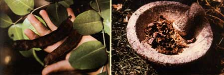

LEFT: The flat, leathery carob pods can be foraged and eaten directly off the tree... but you'll have to spit out the hard seeds that are inside! RIGHT: It's easy to make your own carob flour: Simply remove the seeds, then dry the husks over hot coals and grind them - using a stone mortar and pestle like those pictured here - into a fine, dark meal.